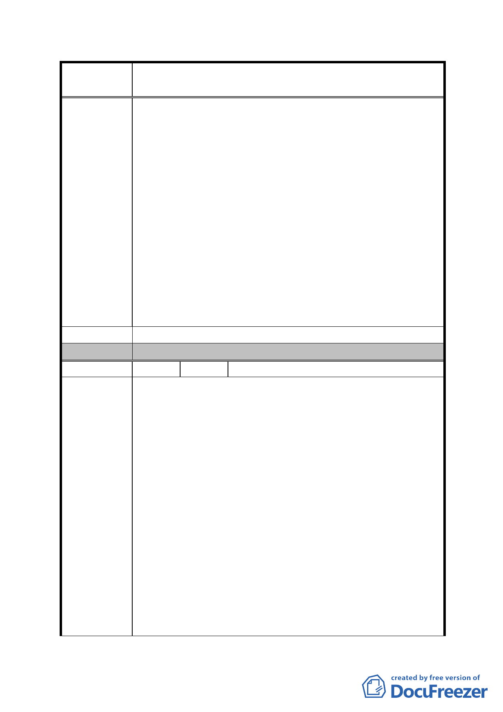

案
名
修訂臺北市「基隆河（中山橋至成美橋段）附近地區土地使
用分區與都市設計管制要點」（北段地區）計畫案
金泰段土地成本高，想由高強度的商業區轉為住宅區卻
須繳代金，又限制開發用途。
二、本Cl土地在分取時既指定為供觀光旅館用途來開發，同
時空地開放空間獎勵辦法也訂定。本Cl土地與C2土地一
樣又加註不得為住宅使用，因此C2土地申請變更取消不
得為住宅使用之字眼，Cl土地地主亦申請變更卻招到百
般刁難，台北市政府要求先經交通部觀光局同意核准住
宅與旅館共構建築，才同意核准與C2同樣辦法辦理，因
此開發時程又浪費一年多。因此Cl土地將依照觀光旅館
用途及商三用途來開發，然而台北市政府變更條例，若
Cl土地將商三用途改為住宅卻須增加代金之繳納。
三、台北市政府認為大彎北段因增加居住人口而衍生之公共
開放空間需求強烈，台北市政府不但不增加獎勵，反而
限縮公共開放空間的獎勵為原有的六分之ㄧ，有違反常
理及公平性，且與基本開發條件不符。
建 議 辦 法 （同上）
委 員 會 決 議 同編號 1。
編 號 8 陳情人 宜華國際股份有限公司（C2）
一、按本公司所有位於台北市中山區金泰段第29地號土
地，座落於基隆河(中山橋至成美橋段)大彎段，自81
年起配合基隆河整治計畫擬定主要計畫案，於83年擬
定細部計劃，在92年1月7日修訂部份內容，在94年7月
1日經本公司申請後，貴府以府都規字第09413518800
號函核准公告都市計畫「修訂台北市基隆河(中山橋至
成美橋段)附近地區細部計畫娛樂區(供觀光旅館使
用)街廓編號C2基地土地使用分區管制規定計畫案」計
陳 情 理 由 畫書，並自民國94年7月2日零時起生效。
二、又貴府於97年1月30日以府都規字第09635914200號公
告展覽內容，有關修訂「基隆河(中山橋至成美橋段)
附近地區土地使用分區與都市設計管制要點」(北段地
區)計畫案，因上開修訂計畫案和本公司所申請，經貴
府於94年7月1日以府都規字第094135l8800號函所核
准公告都市計畫內容，有所抵觸，本公司主張上開修
訂計畫業有抵觸94年7月1日公告都市計畫內容部份，
對本公司不予適用，如土地及建築物之使用、土地使
- 60 -